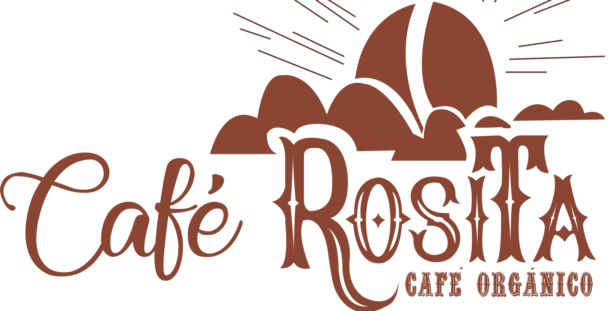

<section class="col-xs-12 col-sm-12 col-md-12 d-grid align-items-center justify-content-center  px-5 mb-5 ">
  <div class="row g-3">
    <div class="col-xs-12 col-sm-12 col-md-5 p-4 d-flex align-items-center">
      
    </div>
    <div class="col-xs-12 col-sm-12 col-md-7 p-3 ">
      <h2 class=" title">{{ title }}</h2>
      <p class="align-middle text-break">Café rosita es una empresa familiar que se encuentra ubicada en el sector rural
        de Palmira, Valle del cauca. Se fundó en el año 2014 de forma empírica y totalmente artesanal. En su comienzo la
        empresa solo contaba con un motor hechizo de 1 caballo de fuerza para el proceso del trillado del grano, en el
        proceso de venteo y limpieza del grano se efectuaba de manera manual, y en el proceso de tostado y la molienda
        final del café este se hacía de manera artesanal.</p>
      <p class="align-middle text-break">Inicialmente se empezó con el proceso de una arroba, de la cual, la mitad se
        regalaba como degustación para mirar la acogida que el producto podía tener en la zona, Gracias a este ensayo se
        pudo lograr vender la otra mitad restante. Es así que durante un periodo aproximado de dos años se utilizó este
        método en la empresa.</p>
      <ng-container *ngIf="showMoreInformation">
        <p class="align-middle text-break">Ya en el año 2016, gracias a la acogida por parte de la comunidad, se
          registra
          la marca “Café Rosita” y en el año 2020, gracias a la convocatoria de emprendedores por parte de la
          gobernación,
          se logra un apoyo económico, con el cual se realiza la compra de todos los accesorios y maquinaria necesaria
          para el desarrollo de la manufacturación de los productos, así mejorando la calidad del producto final sin
          distorsionar su calidad.</p>
        <p class="align-middle text-break">Cabe destacar y resaltar que es un producto totalmente natural, libre de
          químicos y adictivos. Así mismo, es un producto que destaca el trabajo que realizan los caficultores de la
          misma
          zona.</p>
      </ng-container>

      <a *ngIf="showButtonMore" (click)="showMoreInformation =! showMoreInformation" class="btn btn-principal">
        {{ !showMoreInformation ? 'Leer más' : 'Leer menos' }}</a>
    </div>
  </div>
</section>
